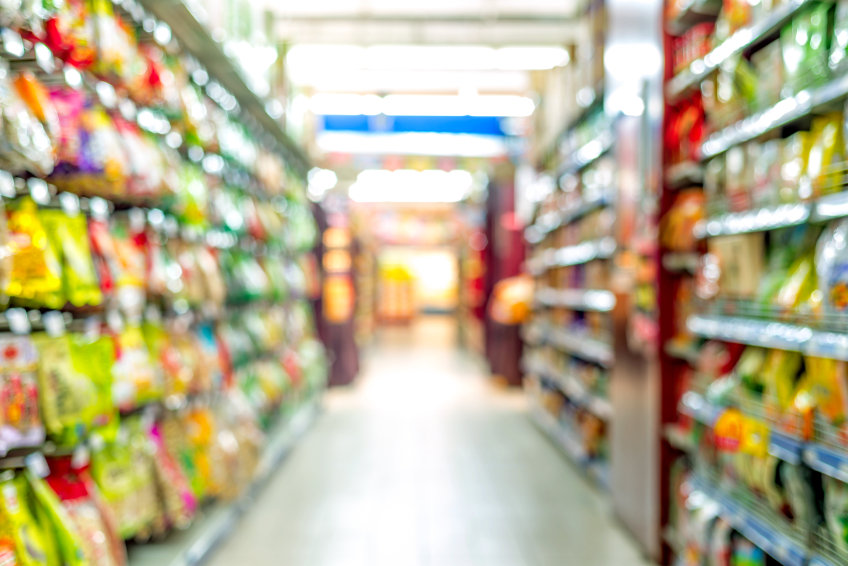

The Food Store Experience (from a millennial perspective)
 Shock Horror! Are supermarkets set to become little more than a day-care for the elderly?When I first read this, I can’t help but admit that it struck a familiar chord with me. Supermarkets can sometimes feel like they’re packed full of older generations who’ve purchased a day pass to dawdle round the aisles, flitting aimlessly from homeware to clothing to the fruit and veg aisle. But this somewhat negative opinion stems from a generational divide in how we shop and what we’ve grown up with.
As the population of millenials begins to outnumber the baby boomers who came before, the big 4 supermarkets in the UK (Sainsbury’s, Tesco, Morrisons, Asda) are scrambling to adapt to a changing and unfamiliar market, whilst fending off challenges from online supermarkets such as Ocado as well as the looming threat of Amazon, who’ve already trialled till-less shopping in the US.
There is undoubtedly a shift occurring in consumer habits that poses a significant problem for food stores, as younger generations are far more willing to shop around for what they want, and the term ‘brand loyalty’ largely associated with older generations begins to lose its significance.
So what exactly do the younger generations value and what can supermarkets do to keep this burgeoning market from deferring to fresher alternatives?
Though I can’t speak for everyone within the Gen Y age bracket, or in fact the unaddressed Gen X that came before us, there are certainly sweeping changes that can be undertaken that I think would appeal to this new age of consumer.
In-Store ExperienceWith the rise of online shopping and meal-kit delivery services, providing an innovative in-store experience is becoming increasingly important in supermarket’s defence against the lure of simply ordering the weekly groceries hunched over your keyboard. Big brands like Sainsbury’s have taken measures to combat this with their own take on efficiency in the supermarket, rolling out SmartShop – digital till-less technology, as well as developing the concept into a downloadable app which allows you to avoid the queues. Though the initiative has faced plenty of deserved criticism, having been to Sainsbury’s on December 24th, seemingly a few thousand people beyond capacity, I’m almost certain that without using SmartShop on this harrowing day I’d still be lost in that queue waiting to purchase last minute items. With the removal of long waits, I think I could easily drag my finger away from ordering my next online shop and return to the aisles.
ProvenanceDespite the rise of prominent discounters (Aldi, Lidl), I strongly disagree with the idea that price is the single most important factor for younger generations. As a society we are becoming increasingly conscientious both of our own health and the effects of our personal shopping habits on the planet. At the risk of being labelled the proverbial snowflake, I know I’d certainly be happier to pay a little more to know that the products I’ve stuffed into my trusty reusable bag are organic, sustainably sourced and packaged in recyclable material. Transparency is essential in this day and age and people of all age groups are more far more willing to switch, avoid or boycott brands based on their environmental policies. Sustainability, waste and carbon footprints are issues that I am incredibly concerned by, and thanks to the internet, with a simple Google search there’s an endless amount of information and data available to justify my fears.
I first wanted to allow Mr Supermarket the opportunity to defend himself and researched the environmental policies expressed by each major store. For example, Sainsbury’s aims to reduce carbon, water and waste from food and drink by at least 20% in the next 10 years, whilst Tesco’s has prioritised reducing unnecessary packaging and improved sourcing of raw materials e.g. using Rainforest Alliance certified cocoa in all own-brand chocolate products.
After reading these examples of stunningly creative and laborious PR drivel, I thought it was time to address reality, as in spite of these ‘radical’ changes, studies such as the 2018 WWF plastics consumption report state that plastic waste output is projected to rise from 5.2 million tonnes to around 6.3 million tonnes by 2030, a 20% increase. With evidence like this it’s difficult to applaud the efforts of these brands, especially as they are mostly doing less than the bare minimum to limit the damage they’re having on the planet.
Unfortunately for retailers, I’m not a crystal ball here to provide the secret formula to ensure the loyalty of younger generations. I believe the future success of supermarket chains demands constant improvement, innovation and the eager embrace of new technology to offer an in-store experience that appeals to the widest possible audience – winning younger consumers whilst retaining loyal customers. I’d love to see an advance in transparency within the supermarket, and with progressive technology brewing such as ESLs (for any German speakers out there I don’t mean ass, it stands for Electronic Shelf-Edge Labels) that could potentially supply us with all the info we need to buy products with a clear conscience – allowing us to see where our products are coming from, whether they’re sustainable, what ingredients they contain etc.
InnovationUltimately, I think I’m a pretty simple shopper; point me in the direction of a supermarket or grocer that sells a wide range of quality products, fairly priced, that have been sustainably packaged and I’ll happily sign your loyalty scheme. Yet despite the plethora of choice available I still don’t feel like there’s an obvious frontrunner currently in the industry. Whichever supermarket can best innovate and adapt to an ever-changing, sustainability conscious market wins – along with the consumer, the environment and humanity in general… The race is on!
SOCIAL RADIO


Powered by EquiNordic Systems